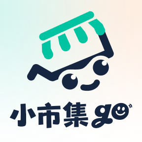
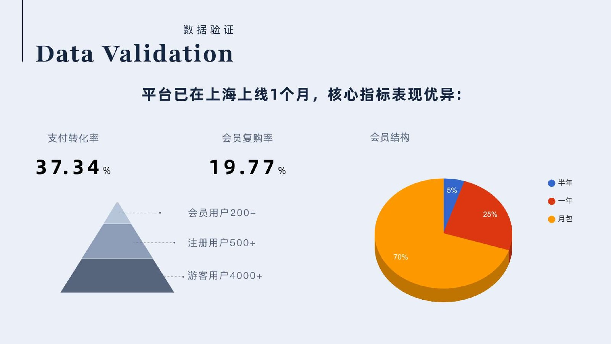
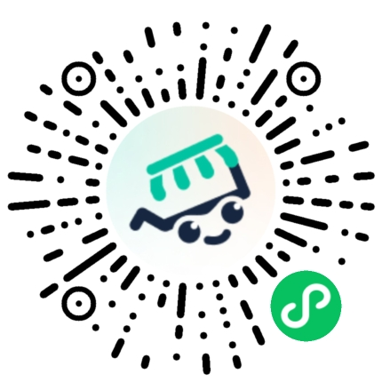

入口分散
微信群、朋友圈与表格组成临时流程，信息难检索、难比较。
FOUNDER CASE · MARKETPLACE PLATFORM · 2025
小市集 go 是连接主办方、摊主与消费者的微信小程序。我从一次真实摆摊经历出发，把分散在微信群、表格和私下转账里的流程，重构为可追踪的报名与交易闭环。
不是再做一个市集内容社区，而是先解决最刚需、最危险的环节：报名与押金。
01 · CONTEXT / 真实起点
第一次找摊位时，我没有找到统一的官方入口，只能加入付费群、私聊主办方、线下转账。进一步收集到的摊主经历反复指向同一个问题：流程不可见，押金无保障。
USER VOICES / 用户说
来自早期摊主经历的质性证据，三段原话指向同一个信任缺口。
A 摊主押金退款经历 01“每次都按时交钱，500 元押金却一拖再拖，对方只说公司财务还没打款。”
B 摊主连续报名经历 02“想退押金，必须先报名下一场。报完以后，退款还是一直拖。”
多位摊主同类资金经历 03“交了 2,000 元押金以后，主办方直接消失。”
微信群、朋友圈与表格组成临时流程，信息难检索、难比较。
报名、审核、缴费和摊位分配缺少统一状态，双方反复沟通。
押金依赖私人信用，退款规则、时间和责任主体都不清晰。
OPPORTUNITY / 市场信号
政策支持夜经济与灵活就业，学生、自由职业者和转型中的个体都在进入市集。规模增长带来的不是单纯流量机会，而是对可信交易基础设施的需求。
以下数据来自 BP 引用的行业资料及公开数据估算，仅作为市场背景，不是小市集 go 的经营结果。
2024 全国策展市集市场规模
BP 引用：艾瑞咨询一线 / 新一线城市摊主
BP 引用：平台热力与公开数据估算02 · STRATEGY / 产品判断
竞品更像品牌展示与内容社区。我的判断是，小市集 go 应从高频刚需的“报名工具 + 交易平台”切入，让平台先成为一笔押金、一场活动和一次履约的可信第三方。
TRUST FIRST
把退款条件、当前状态和责任方写进流程，不让用户靠催问确认资金去向。
ONE SHARED STATE
主办方发布与审核，摊主报名与参展，消费者浏览与互动，共享同一活动对象。
ONLINE × OFFLINE
把线下摊位、签到、内容传播和交易数据带回线上，形成可持续复用的运营资产。
03 · SYSTEM / 产品架构
产品不是三个相互割裂的端，而是围绕“市集活动”建立共享状态。每个角色看到与自己决策有关的信息，平台层负责交易、内容与数据闭环。
SOLUTION / 解决方案
以报名交易为入口，用 SaaS、内容、AI 与现场连接能力，逐步形成可复用的市集经营闭环。

线上报名与线下扫码协同，沉淀可持续运营的数据资产。
PRIORITY / 取舍
电商会放大商品供给、履约和售后复杂度，也容易让平台失去市集工具定位。因此第一阶段优先验证报名、会员与交易信任；内容、课程、AI 和品牌孵化作为后续增长层。
POSITIONING / 竞争选择
活动展示、内容发布、电商导流
报名、审核、押金与现场协作
主要依赖主办方信用
平台记录资金与履约状态
依赖品牌活动与内容曝光
主办方供给 → 摊主报名 → 消费者互动
品牌合作与电商导流
会员、交易服务、SaaS 与课程
04 · EVIDENCE / 上线验证
证据边界以下为 BP 记录的产品首月数据，可用于说明早期支付意愿；尚不能单独证明长期留存、城市复制能力或具体设计改动的因果贡献。
首月支付转化率
会员复购率
访问用户
注册用户
会员用户
月卡占比高，说明低门槛试用是早期主流选择；后续需要用 cohort 数据继续验证续费与长期价值。

BUSINESS MODEL / 设计约束
商业模型决定产品不能只优化一次报名。体验需要逐步承接订阅、活动交易、主办方工具和品牌成长，但这些收入数字仍是 BP 模型，不应和已验证结果混在一起。
用低门槛订阅建立现金流、用户档案和复购入口。
MODEL / BP 年收入预测 ¥294 万围绕高价值流量和履约提供广告位与交易服务。
MODEL / BP 年收入预测 ¥234 万把城市市集运营沉淀为工具、数据与品牌成长服务。
MODEL / BP 年收入预测 ¥392 万+REFLECTION / 复盘
用户愿意为更集中、更可控的市集服务付费，会员模式具备早期信号。
退款纠纷率、主办方处理效率、会员 cohort 留存，以及跨城市复制成本。
先补齐履约和退款数据，再扩展 SaaS、AI 匹配与线下硬件，避免增长先于信任。
TRY THE PRODUCT / 微信扫码
打开微信扫描右侧小程序码。你可以浏览市集、查看活动信息，并体验小市集 go 的产品入口。
